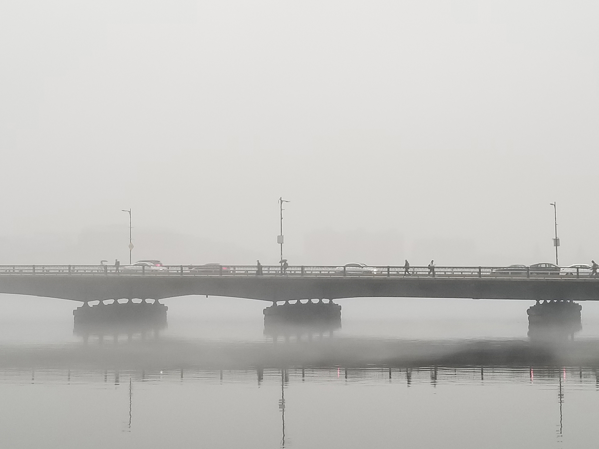
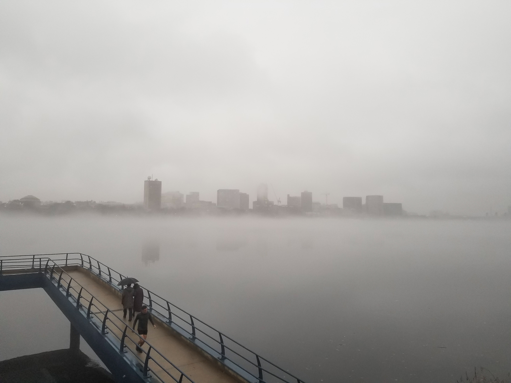
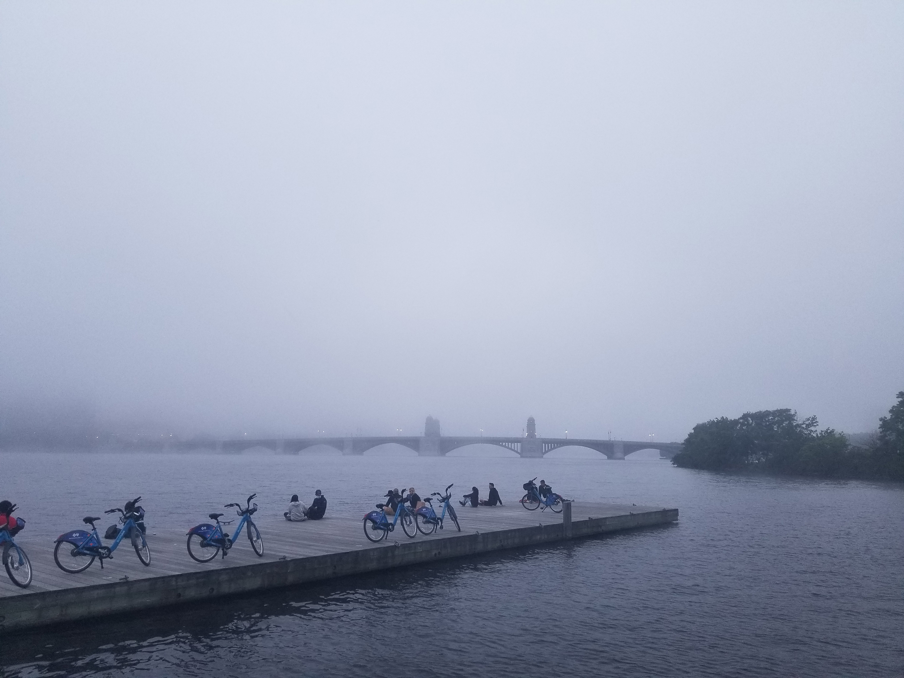
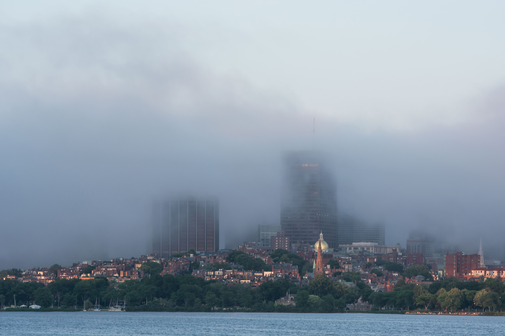
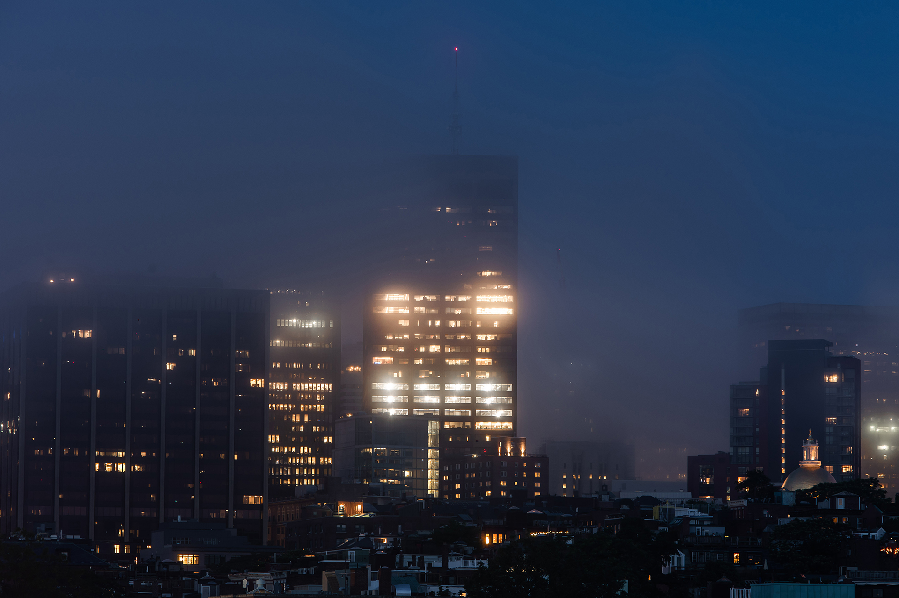
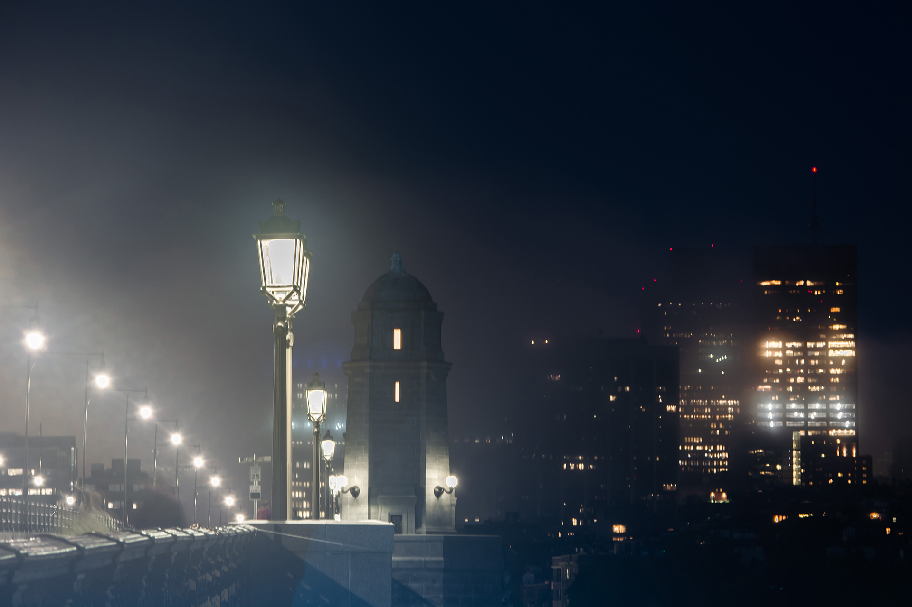

A DAY OF NATURE'S INVASION
After a drastic temperature drop, thick fogs emerged on the water surface of Boston Harbor, flowed into Charles River,
and gradually swallowed the city. Modern skyscrapers, historic townhouses, concrete highways, asphalt trails, metal signs,
and other evidence of centuries of human interventions vanished in the invincible blankness of a natural phenomenon.
One may consider it a seasonal routine that comes and leaves without interrupting Boston's next buildups. However, when the
magnificent skyline reduced to sporadic and shapeless mirage across the foggy Charles River, I saw the place returning to the
pre-Boston state of ambiguity where fogs had once created the same mirage through trees on a wetland.
As I continued my walk along Charles River, the city began to reemerge from the blankness, first by blurry lights on a hidden
bridge, then the silhouette of the concrete deck on piers followed by vague walking figures with umbrellas. When the foggy air
condensed into dark blue and the distant skylines reemerged piece by piece, I knew nature's invasion was ceasing. By the end of
the day, the illuminated city reclaimed herself, dazzling behind the last faint fog.
If nature can manifest itself against our cities like this at any time, then how can we face nature's real counterattack with our fragility?
If cities can only perceive nature through this shapeless invasion, then how long it takes for the last evidence of nature to leave us?






